Crisis Center - User Guide
1. Introduction

Crisis Center (Crisis Containment Service) is a Web platform which allows managing situations of crisis (for instance, earthquakes, floods, fire, tsunamis) by authorities or different organisations.
The application uses Google Crisis Map and services like Google Person Finder, in order for the system automatically provide information used for finding a missing person and regarding eventual shelters and saving routes in cases of emergency.
The website will provide users with the ability to check again the past events in their area and if they were solved.
Last but not least, users will be presented a variety of articles regarding how to help organisations, what to do in a crisis, first-aid, a page where world-wide current events are being shown and also a page where other organisations in partnership with Crisis Center can be found.
2. Creating an account and logging in
In order to have access to recent news in your local area, you need to create an account. Don't worry, your informations are safely stored, as we respect GDPR procedures.
2.1 How to Create an Account
- On the home page, press the button "Sign Up" in the upper-right corner of the page. You will be redirected to the Register page.
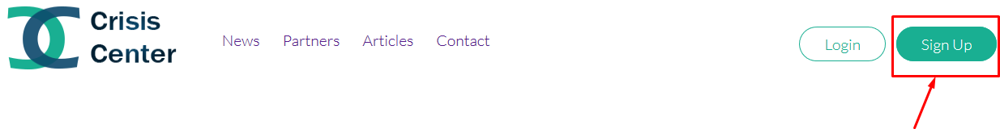
- On the Register page, you will have to choose if you want to create an account as a citizen or an authority.
All of the information in the form is required, as it is needed to be able to recognize emergencies in your local area.
Complete the fields carefully, choosing a valid email (if we need to contact you or send notifications to you) and a strong passphrase.
- After you have completed filling out the fields, press the Submit! button. This will take you back to the home page. From now on, you will be able to log in.
Important: If you have signed as an authority, you will be asked to validate the information you have provided via email. (future functionality)
2.2 How to Log in
- In order to login, you have to press the button Login located in the upper right section of every page.
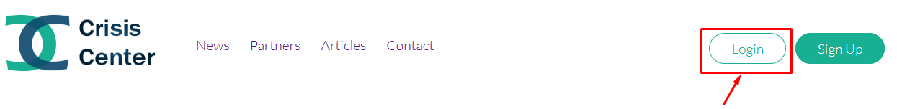
- You need to provide the email you registered with and your passphrase.
- After that, you can press the button "Submit". If you provided the correct information, then the login is successful and you will be redirected to the login page.
2.3 I Forgot My Password
Do not worry if you forgot your password! You can always reset it by pressing the "Forgot password" button located in the login form. Then, a mail will be sent to you and will take you to further steps of recovering it. (future functionality)
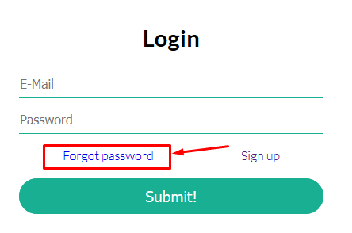
3. What Our Website Offers
Through Crisis Center, we want to provide anyone that enters our website with the essential information regarding how to help somebody and what is happening around the world.
This is why we provide users with breaking news and articles. You do not need to log in or have an account in order to access this information.
3.1 Breaking News
The Home Page is where breaking news titles are being shown. In case you want more information on what happened, you can enter the News page, where you can find short texts that will lead you to other safe websites where full articles are being presented.
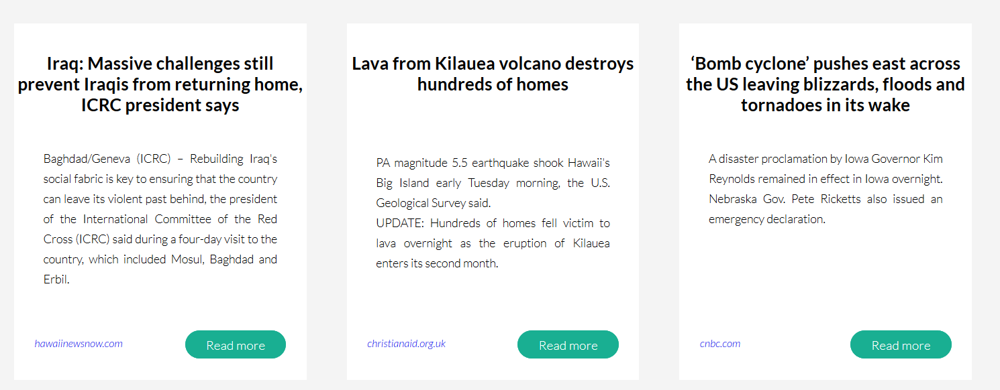
3.2 Worldwide Emergencies and Current Events
You can see critical areas around the globe on the News Page, where Google Crisis Map is integrated. All the data presented is verified and always being updated.
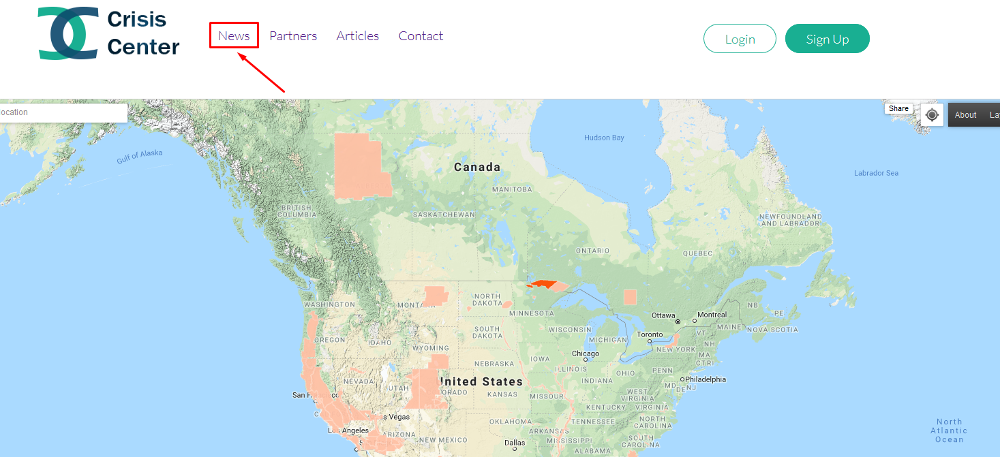
3.3 See Partners
We have associated with diverse organizations which strive to make the world a better place. You can find out about them and our partnerships in the Partners page.
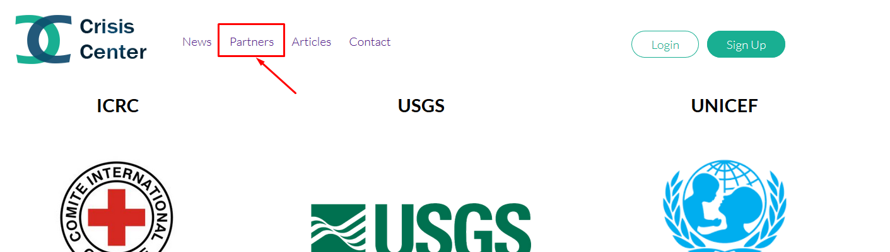
3.4 Read articles
In order to gain extra information on how to act during a crisis, we have provided our website with different articles in many areas like First Aid, Events, Certificates, Volunteering. Every article is being shown in the Articles page, and has a short description in order to find out what it is about.
In order to read the full article, you need to press the button "Continue Reading" which appears for every article under its short description.
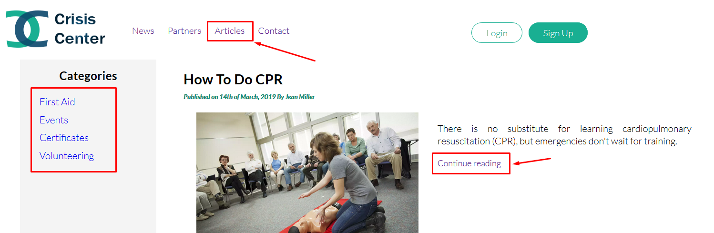
We have provided a Contact page where you can find out more information about Crisis Center, who we are and what is our motivation and our mission.
Nevertheless, if you have any feedback or question for us, there is a Contact form that you can submit which will be sent to us via email.
In order to submit it, you have to complete all the required fields and press the button "Submit".
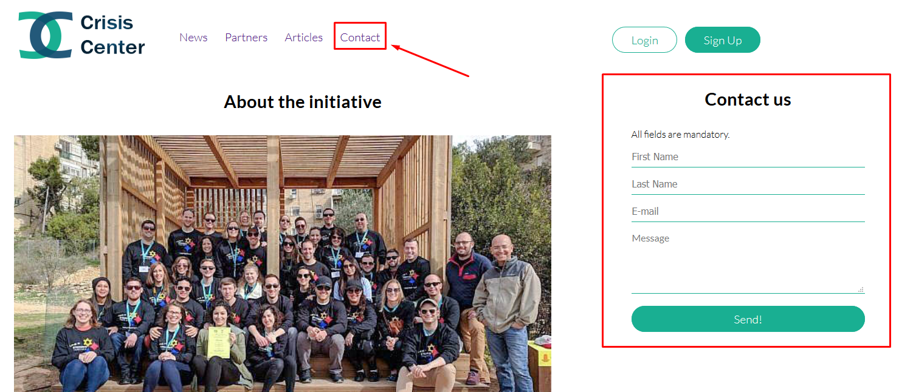
4. Your Dashboard
On your dashboard, you will be able to see current events hapenning near you, and also report an event that you have witnessed or a person that you know to be missing.
4.1 See alerts nearby
You can see both current alerts and past alerts on your dashboard page that you can access from "My Dashboard" button in the upper right corner of the page.
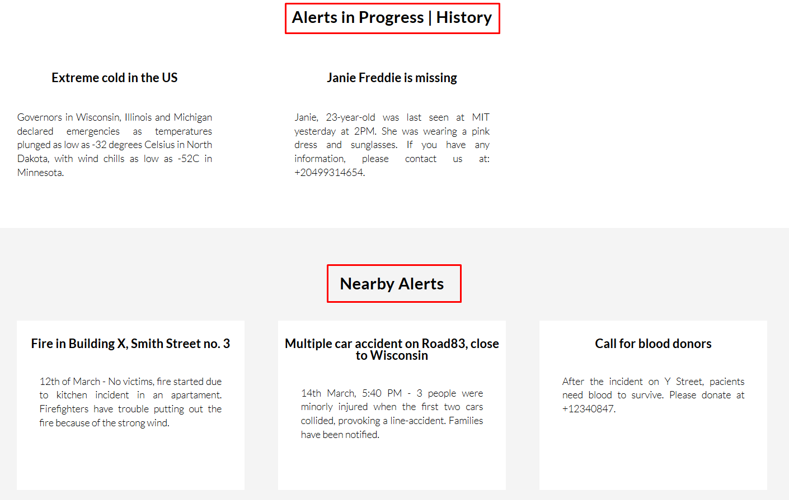
4.2 Add a new Alert
- In order to add a new alert, you can press the button "Add alert" on the dashboard page.
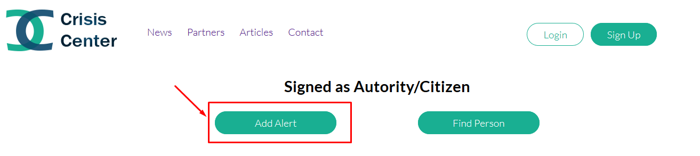
- You will be redirected to a form that you have to complete in which you need to describe the alert. Both fields are mandatory.
- After filling in the fields, you need to press the button "Submit!" Now your alert will appear on your dashboard page in the "Current alerts" section.
4.3 Find Missing Person
- In order to report a missing person, you need to press the button "Find Person" located on the dashboard page.
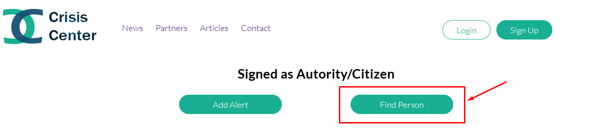
- To find a missing person, we need all the details that can be provided. This is why it is good to write everything you now in the form that you were redirected to.
- After you finished completing the form, don't forget to press "Submit!". Now the authorities will be alerted and your report will be shown in your Dashboard "Current alerts" section.
5. About Crisis Center
Crisis Center works to deliver vital services – from providing relief and support to those in crisis, to helping you be prepared to respond in emergencies.
Each day, thousands of people – people just like you – provide compassionate care to those in need. Our network of generous donors, volunteers and employees share a mission of preventing and relieving suffering, here at home and around the world.
We roll up our sleeves and donate time, money and blood. We learn or teach life-saving skills so our communities can be better prepared when the need arises. We do this every day because help is needed - every day.